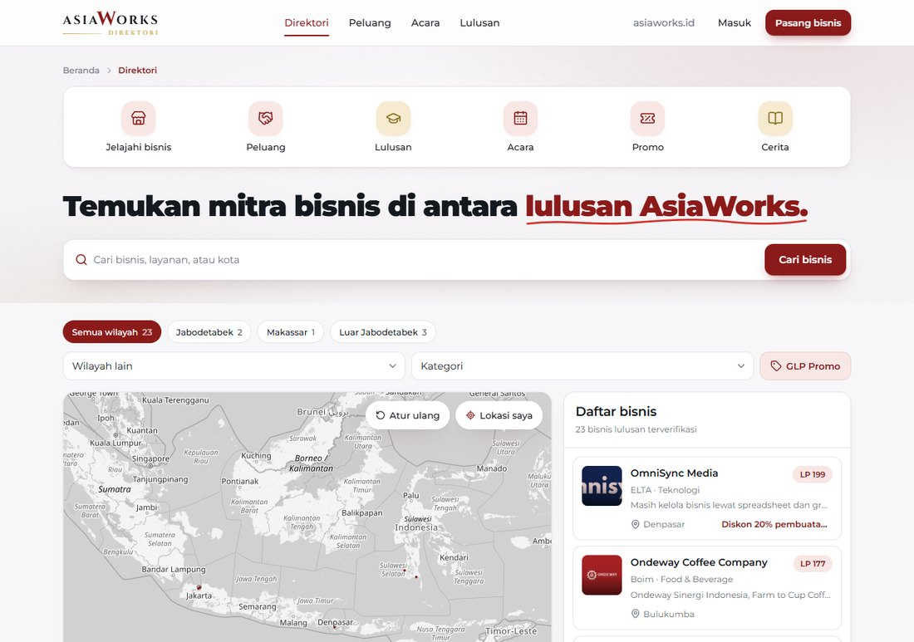
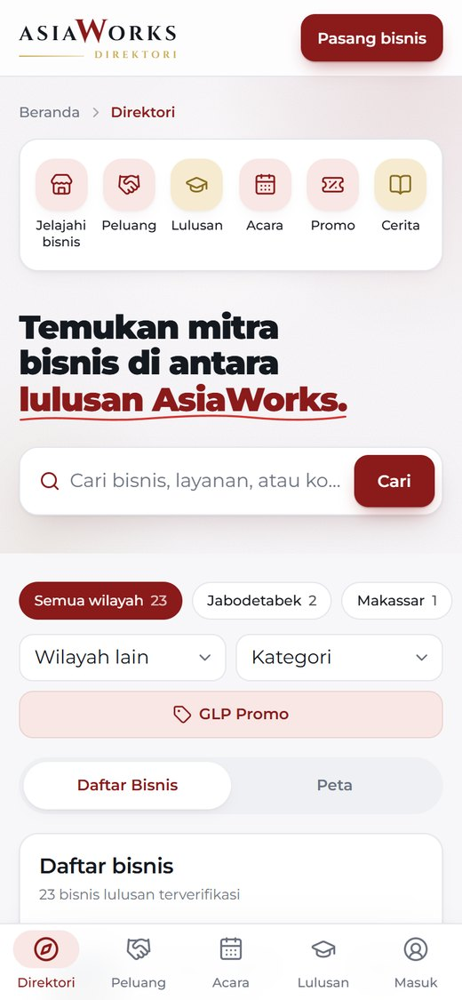
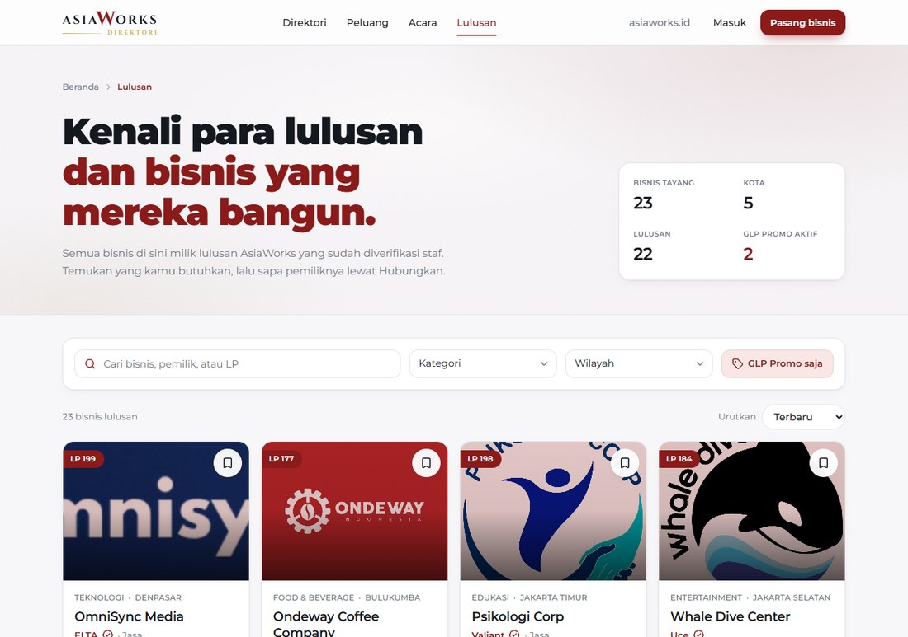
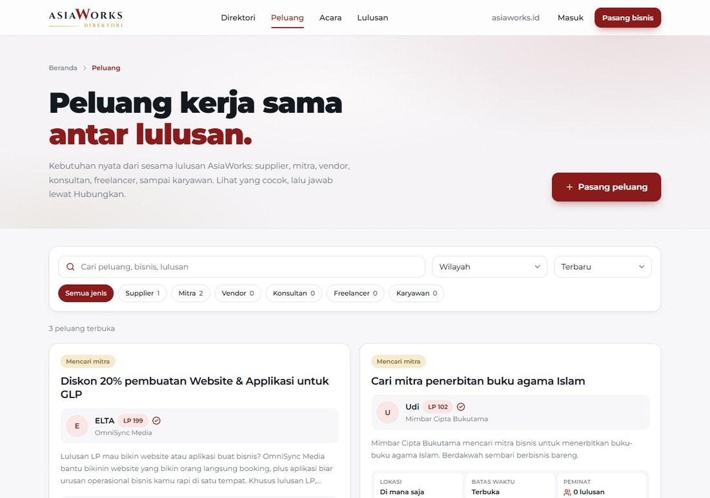
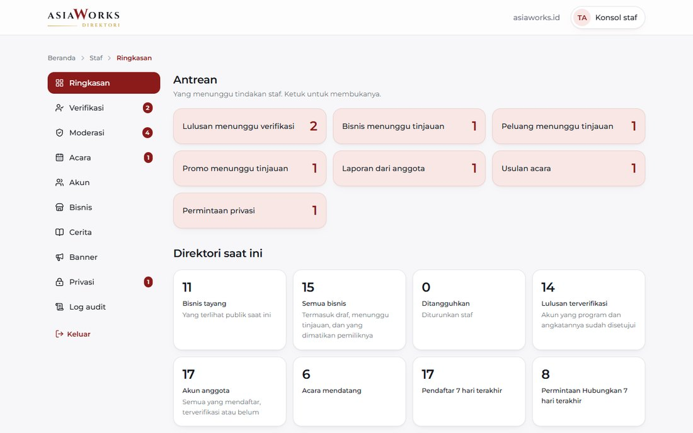

Everything the AsiaWorks team needs to own, run and grow the graduate business directory: what was built, how it works, where it lives, and how to keep it healthy.
AsiaWorks Direktori is where graduates list their businesses, the public finds them, and graduates find each other to work together. It is live, in Bahasa Indonesia, and works the same on a phone and on a desktop.
Directory figures as shown on the live site on 9 October 2026. Every change is listed in the dev log.

/staff, where your team verifies graduates and runs the directory.docs/devlog.csv) of every change made.Every page has breadcrumbs and its own search. Visitors can browse all of it without an account.
| Address | Name on the site | What it is for |
|---|---|---|
/ | Direktori | Home. Banner slider, shortcuts, search, area and category filters, the map with pins and the business list, browse by category, latest Peluang, GLP Promo and events. |
/bisnis/… | Halaman bisnis | One business: description, pictures, links, locations on a map, the owner, its promo, and the Hubungkan and Lihat kontak buttons. |
/peluang | Peluang | Partner requests from graduates: supplier, mitra, vendor, konsultan, freelancer or karyawan. |
/acara | Acara | Meetups, workshops and gatherings with RSVP, plus collaboration stories and "Usulkan acara" for graduates who want to host. |
/lulusan | Lulusan | Meet the graduates: every live business as a card, searchable by name, owner or batch (LP, IA, IB). |
/daftar | Pasang bisnis | Sign-up in three short steps: account, programs and batch, then the business. |
/masuk | Masuk | Member login, with "Lupa kata sandi". |
/akun | Dasbor | The member's dashboard: Peluang, Bisnis, Koneksi and Akun. |
/staff | Konsol staf | Staff login and the console. A member's account is refused here. |


There are four kinds of people on the site. Each one sees and does more than the one before.
| Hubungkan | A short request from one member to a business. Only the owner answers it. Staff cannot read these. |
| Peluang | A real need, posted publicly: a supplier, partner, vendor, consultant, freelancer or hire. |
| GLP Promo | A deal a business offers to fellow graduates, shown on its card. The owner can switch it off. |
| Acara | Events with RSVP, a seat limit and a waiting list. |
| Cerita | A collaboration story between two businesses, written by staff and published only when both owners agree. |
Staff sign in at /staff. The first screen shows what is waiting for a decision, and a red badge on each section counts its queue. On a phone the sections sit in a bar at the bottom.

| Ringkasan | Queues, directory numbers, latest activity. |
| Verifikasi | Approve or reject a graduate's program and batch. |
| Moderasi | Review businesses, Peluang and Promo; suspend or reinstate; handle reports. |
| Acara | Create events, see RSVPs, review hosting offers. |
| Akun | Every account, its contact, status and businesses. |
| Bisnis | Every business as Tayang or Tidak tayang, with the reason. |
| Cerita | Write collaboration stories. |
| Banner | The home slider: announcements and ads for a business. |
| Privasi | Account deletion requests. |
| Log audit | Who did what, and when. The latest 500 actions. |
The console has four switches made for demos: Auto Approve Graduates Request, Auto Approve Bisnis, Auto Approve Peluang and Auto Approve Promo. While one is on, whatever is sent goes live with no review.
For normal running, keep all four off. They are in Verifikasi and Moderasi, and every automatic approval is written to the audit log.
These rules live inside the database, not in the screens. Someone who bypasses the website and talks to the database directly meets the same rules.
A business appears only with the owner's consent and a moderator's approval, and only while its owner is a verified graduate.
Never from what a person types. Programs and batch numbers lock once the request is sent. Withdrawing the status takes that person's listings down.
Phone numbers and business contacts are stored encrypted. They reach another person only through "Lihat kontak" (verified graduates, and it is recorded) or an accepted Hubungkan request.
Search, the map, Peluang, promos, stories and ads all drop it at the same moment. The same goes for a listing its owner switched off.
A home business can show an area instead of a point. The database rounds the point to about 1 km before storing it, so the exact spot is never kept.
Deleting a listing or an account removes the data and the stored pictures. Only a payment's amount and date would remain, detached from the person.
Members cannot add, change or remove one. An ad carries the label "Iklan" and leaves the home page while its business is not public.
Approvals, rejections, suspensions and deletions are written to the audit log by the database itself.
| Information | Visitor | Member | Verified graduate | Staff |
|---|---|---|---|---|
| Live businesses, Peluang, events | Yes | Yes | Yes | Yes |
| Owner's name, programs, batch | Yes | Yes | Yes | Yes |
| Business contact | No | After an accepted request | Through Lihat kontak | Yes |
| Hubungkan requests | No | Only the two people involved | No | |
| Drafts and switched-off listings | No | Only their owner | Yes | |
Proving the rules still hold. The project includes a test, npm run check, that signs up its own test accounts, tries each rule as a real visitor, member, graduate and staff member, then removes everything it made. Run it after any change to the database.
The directory is deliberately small: one web application and one database service. There is no server of our own to patch or restart.
| Part | What is used | What it does |
|---|---|---|
| Website | Next.js 16, React 19, TypeScript, Tailwind CSS 4 | All nine pages. The whole feature is one folder, app/(aw), so it can be moved into another Next.js site. |
| Hosting | Vercel | Builds and publishes the site every time the main branch changes. |
| Database and login | Supabase (PostgreSQL) | Accounts, all directory data, the permission rules, search, and picture storage. |
| Map | Leaflet with OpenStreetMap | The map and its pins. No API key and no usage fee. |
| Source code | GitHub | Repository insurgent6a-pixel/AWDirektori. Each change arrives as a pull request. |
| Domain | direktori.asiaworks.id | A subdomain of asiaworks.id pointing at Vercel. |
main.main and the live site updates within a few minutes.supabase/upgrades/. It is pasted into Supabase's SQL Editor, oldest first. Each file is safe to run twice and deletes nothing.The site's two Supabase settings are stored in Vercel and are built into the site, so changing one needs a redeploy.
Tick each one when AsiaWorks holds an owner-level login.
The person signs up at /daftar (the first step is enough). Someone with Supabase access then sets that account's role to staff in the SQL Editor; the exact line is in the README. After that they sign in at /staff.
The brief asked for a light, simple build for 35 to 100 members. These are the choices that kept it light. None of them is a problem today; each has a clear upgrade when the directory grows.
| Choice made | What it means today | When to revisit |
|---|---|---|
| Search returns up to 200 businesses | Every business fits in one result, so search and the map feel instant. | When live businesses approach 200. |
| Peluang and Acara filter in the browser | One fetch, then filtering with no waiting. | Past a few hundred Peluang or events. |
| Page views are a simple counter | Counted once per browser session. Good for a rough picture, not for billing. | If view numbers are ever sold to advertisers. |
| Audit log shows the latest 500 actions | Older actions stay stored; the screen just does not list them. | When staff need to look further back. |
| Pages are drawn in the browser | Fast for people. Google may index individual business pages less fully. | When being found on Google matters for each business. |
| Deleted pictures linger briefly | A deleted picture is gone from storage at once, but its direct address can answer for up to a minute. | No action needed. |
No payment provider is connected and no screen asks for money. Staff put ads up by hand. The database is ready for payments, so connecting a provider later does not need a rebuild.
Supabase's built-in mailer sends only a few messages an hour. For password resets to work reliably as membership grows, connect AsiaWorks' own email service (SMTP) in Supabase.
Members see new Hubungkan requests as a badge in their dashboard. The site does not send email or WhatsApp alerts.
Members can ask for their account to be deleted from the dashboard. A self-service copy of their data is not offered.
Most of the work is the staff's weekly routine on page 5. The technical upkeep below is small, but skipping it is how a site quietly ages.
| How often | Task | Why it matters |
|---|---|---|
| Weekly | Clear the Verifikasi and Moderasi queues. Open the live site and try one search. | Graduates wait on staff to go live. |
| Monthly | Check the Supabase dashboard: database size, storage used, and that a recent backup exists. | Pictures and data grow with every listing. |
| Monthly | Read the audit log for anything unexpected, and confirm the four Auto Approve switches are off. | Catches a switch left on after a demo. |
| Quarterly | Update the site's software packages (Next.js, React, Supabase client), then run the build and npm run check. | Security fixes arrive as package updates. |
| Quarterly | Review staff accounts. Remove the role from people who left the team. | Staff can see every account and contact. |
| Yearly | Confirm the domain and all service accounts are still owned by a current AsiaWorks person. | Logins tied to one person are the usual way a site is lost. |
| After any change | Run npm run devlog so the dev log sheet stays complete. | One place to see what changed and when. |
At the time of writing, a Supabase project on the free plan is paused after about a week with no activity and has no automatic backups. For a site holding members' details, confirm the plan and make sure daily backups are on.
There is no licence fee for the directory itself, and the map is free. The recurring costs are the Vercel and Supabase plans and the asiaworks.id domain. Which plans fit depends on traffic and on the backup decision above, so they are best confirmed together at handover.
The directory is yours either way. The options differ in who does the technical upkeep on page 9 and who is on hand when something needs changing.
For a team with its own developer who knows React and SQL.
No ongoing fee. Help afterwards is quoted per request.
For a stable site that needs a hand only now and then.
Pay per job. No guaranteed response time.
For peace of mind while the directory fills up after launch.
Fixed monthly fee, to be agreed.
For a directory AsiaWorks wants to keep building on.
Monthly fee plus an agreed feature budget.
| A · Self-managed | B · On call | C · Care plan | D · Care and growth | |
|---|---|---|---|---|
| Routine upkeep | AsiaWorks | AsiaWorks | OmniSync Media | OmniSync Media |
| Fixes | AsiaWorks | Per job | Included | Included |
| Small changes | AsiaWorks | Per job | Monthly allowance | Monthly allowance |
| New features | AsiaWorks | Per job | Quoted separately | Planned each cycle |
| Monthly report | None | None | Yes | Yes, plus quarterly review |
Ideas the current build already makes room for, roughly in the order they would pay off.
| Idea | What members or staff would get | Groundwork already there |
|---|---|---|
| Email or WhatsApp alerts | A member hears about a Hubungkan request without opening the dashboard. | Requests and their status are stored. |
| AsiaWorks' own email service | Password resets and confirmations that always arrive. | A setting in Supabase. |
| Business pages on Google | Each business can be found by people searching outside the directory. | Pages have stable addresses. |
| Paid ads with online payment | A business books and pays for a banner slot itself. | Payments table and rules. |
| Paging for a larger directory | Search stays fast beyond 200 businesses. | Search runs in the database. |
| Bringing in the Expo sign-ups | Graduates who filled in the form at Expo get an account and a listing without typing it again. | The import tool is built. |
Every change since the first build is listed in docs/devlog.csv, which opens in Excel or Google Sheets. Each row has the date, the part of the site, what changed and why, whether it is live, and a reference to the pull request and the exact code change.
The sheet is written from the project's own history, so it cannot drift from what was really done. After new work, npm run devlog brings it up to date.
20 live. 1 waiting for approval: the larger map dots for approximate locations.
Signing below confirms that the access checklist on page 7 is complete and a maintenance option on page 10 has been chosen.